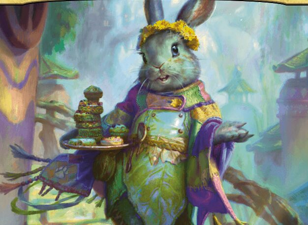

The Necrobloom
Unter dem Schnitt
Das Deck gewinnt 16 % seiner Partien – der Schnitt am Vierertisch liegt bei 25 %.
- Stufe · Elo
- C 1341 Platz 54 von 64 in der Rangliste bis 100 €
- Siegquote
- 16 % 70,2 Siege in 436 Partien, mit 90 % Sicherheit zwischen 13 und 19 %
- Platzierungen
- 120 %8×
- 235 %14×
- 322 %9×
- 422 %9×
Dort ein neues Deck anlegen und die Liste beim Import einfügen.
- Preis
- 99,54 €von 100,00 €
- Partien
- 480in 48 Turnieren, 44 am Zeitlimit nicht gewertet
- Karten
- 10039 Länder, davon 17 Standard
- Game Changer
- 1höchstens 3 erlaubt
- Kombos
- 5komplett im Deck
- Regelcheck
- Bestanden100 Karten, Farben, Bannliste
Zeitlimit-Hinweis: 9 % der Partien dieses Decks liefen auch im dritten Versuch bis zum Zeitlimit ohne Sieger (alle Decks dieser Preisklasse: 3 %). Meist hängt die Forge-KI dann in einer Schleife fest, etwa mit vielen Spielsteinen. Diese Partien zählen nicht – die Siegquote ist darum etwas weniger aussagekräftig.
Höchstens 100 € inklusive Commander. Steigen die Preise darüber, wird die Kaufliste automatisch neu gebaut.
Die Kaufliste wurde am 10.11.2026 mit aktuellen Preisen neu gebaut: Die getestete Fassung kostete inzwischen 101,95 € und lag damit über 100,00 €. Siegquote und Platzierung stammen von der getesteten Fassung.
Stärken und Schwächen
Aus 426 ausgewerteten Partien in 47 Turnieren (mit den Listen, die im Turnier gespielt wurden). Partien am Zeitlimit zählen wie in der Rangliste nicht. Werte in Klammern: Schnitt aller Decks derselben Preisklasse. Die genauen Zahlen siehst du, wenn du mit der Maus auf einen Punkt zeigst oder ihn antippst.
Spielweise: gewinnt über den Kampf – 100 % des Schadens an Gegnern ist Kampfschaden · So gewinnt es: 41 % der Siege durch Überleben (höchstens einen Gegner selbst ausgeschaltet, die übrigen schalteten sich gegenseitig aus) – Schnitt aller Decks: 31 %
Stärken
Keine eindeutige Stärke in den Logs.
Schwächen
- Lässt viel Mana liegen sicher45 % der Länder wurden in einem Zug nicht genutzt (Schnitt aller Decks: 26 %) – meist war die Hand leer oder die Karten passten nicht · gemessen in den eigenen Zügen 3–8, 148 Partien
- Wenig Druck sichernur Ø 18 Schaden an Gegnern je Partie (Schnitt aller Decks: 31) · 426 Partien
- Wird oft als Erstes ausgeschaltet sicherin 40 % der Partien (Schnitt aller Decks: 25 %) · 172 von 426 Partien
- Schaltet selten Gegner aus sicherim Schnitt 0,42 je Partie (Schnitt aller Decks: 0,63) · 426 Partien
Gegen wen es gewinnt
Siegquote an Tischen, an denen dieser Commander mitspielte – nur Gegner aus der aktuellen Rangliste mit mindestens 20 gemeinsamen Partien. Am Vierertisch liegt der Schnitt bei 25 %.
Gewinnt oft gegen

27 %von 26 25 %von 20
25 %von 20 24 %von 33
24 %von 33
Tut sich schwer gegen
 4 %von 27
4 %von 27 5 %von 20
5 %von 20 5 %von 20
5 %von 20
Commander (1)
- The NecrobloomKombo0,19 €
Kreaturen (27)
- Sylvan Safekeeper SchutzKI kann nicht6,64 €
- Dryad of the Ilysian Grove RampKombo6,01 €
- Lotus Cobra RampKombo5,23 €
- Springheart NantukoKombo4,54 €
- Six4,50 €
- Kodama of the East TreeKombo3,60 €
- Thalia and The Gitrog Monster Ramp3,56 €
- Ramunap Excavator3,03 €
- Tireless Provisioner RampKombo2,01 €
- Aftermath Analyst1,27 €
- Knight of the Reliquary Ramp1,20 €
- The Gitrog Monster RampKombo1,09 €
- Eternal Witness0,87 €
- Wight of the Reliquary Ramp0,87 €
- Avenger of Zendikar0,65 €
- Titania, Protector of Argoth0,49 €
- Mirkwood Bats0,40 €
- Sakura-Tribe Elder Ramp0,38 €
- Emeria AngelKombo0,29 €
- Rampaging BalothsKombo0,26 €
- Tireless Tracker KartenziehenKombo0,21 €
- Springbloom Druid RampKombo0,17 €
- Territory Culler0,17 €
- SporemoundKombo0,16 €
- Maja, Bretagard ProtectorKombo0,10 €
- Elfsworn GiantKombo0,08 €
- Satyr Wayfinder0,06 €
Spontanzauber (8)
- Crop Rotation RampGame ChangerKI schwach3,56 €
- Assassin's Trophy Removal1,20 €
- Path to Exile Removal1,00 €
- Swords to Plowshares Removal0,94 €
- Beast Within RemovalKI kann nicht0,63 €
- Generous Gift Removal0,57 €
- Harrow Ramp0,20 €
- Village Rites Kartenziehen0,19 €
Hexereien (9)
- Life from the Loam5,02 €
- Nature's Lore Ramp2,12 €
- Splendid Reclamation0,71 €
- Farseek RampKI schwach0,61 €
- Victimize0,52 €
- Sevinne's ReclamationKI schwach0,37 €
- Dread Return0,35 €
- Explore Kartenziehen0,17 €
- Rampant Growth Ramp0,13 €
Artefakte (6)
- Ashnod's AltarKombo10,30 €
- Hedge Shredder2,07 €
- Conduit of Worlds1,40 €
- Sol Ring Ramp0,85 €
- Arcane Signet Ramp0,39 €
- Chocobo RacetrackKombo0,19 €
Verzauberungen (10)
- Cathars' CrusadeKombo4,94 €
- Spelunking RampKombo3,41 €
- Insidious Roots Ramp1,50 €
- Felidar RetreatKombo1,19 €
- Zendikar's RoilKombo0,82 €
- Retreat to Hagra0,59 €
- Perilous Forays RampKomboKI schwach0,46 €
- Retreat to EmeriaKombo0,16 €
- Khalni Heart Expedition Ramp0,15 €
- Quest for the Necropolis0,09 €
Länder (39)
- Bojuka Bog1,30 €
- Fabled Passage0,96 €
- Canopy Vista0,22 €
- Command Tower0,21 €
- Blighted Woodland0,20 €
- Exotic Orchard0,18 €
- Golgari Rot FarmKombo0,17 €
- Myriad Landscape0,16 €
- Riveteers Overlook0,16 €
- Scattered Groves0,15 €
- Barren Moor0,14 €
- Krosan Verge0,12 €
- Orzhov BasilicaKombo0,11 €
- Selesnya SanctuaryKombo0,11 €
- Deceptive Landscape0,10 €
- Escape Tunnel0,09 €
- Ash Barrens0,08 €
- Tranquil Thicket0,08 €
- Terramorphic Expanse0,06 €
- Evolving Wilds0,04 €
- Jungle Hollow0,04 €
- Blossoming Sands0,03 €
- 3× Swamp
- 11× Forest
- 3× Plains
Kombos im Deck (5)
Erkannt aus der Kartenliste (Commander Spellbook): theoretisch möglich, Voraussetzungen siehe Spellbook. Ob eine Kombo in Partien wirklich zusammenkam, steht im Reiter „Partien“.
- Kodama of the East Tree + … → ∞ Landfall-Auslöser, ∞ Kreaturenspielsteine, ∞ ETB-Auslöser von Kreaturen
39 Fassungen, dazu passt jeweils eine von: Golgari Rot Farm · Selesnya Sanctuary · Orzhov Basilica · Tireless Provisioner · Felidar Retreat · Rampaging Baloths und 10 weitere - Perilous Forays + … → Alle Länder mit Standardlandtyp aus der Bibliothek getappt ins Spiel, ∞ Landfall-Auslöser, ∞ getappte Land-Spielsteine
38 Fassungen, dazu passt jeweils eine von: Tireless Provisioner · Lotus Cobra · Spelunking · Springheart Nantuko · Rampaging Baloths · Zendikar's Roil und 9 weitere - Springheart Nantuko + Spelunking + Dryad of the Ilysian Grove + … → ∞ ETB-Auslöser von Kreaturen, ∞ schwarzes Mana, ∞ grünes Mana
2 Fassungen, dazu passt jeweils eine von: Golgari Rot Farm · Selesnya Sanctuary - The Gitrog Monster + The Necrobloom → ∞ Selbst-Millen, Fast ∞ Abwurf-Auslöser
- Ashnod's Altar + Cathars' Crusade → ∞ ETB-Auslöser von Kreaturen, ∞ LTB-Auslöser von Kreaturen, ∞ +1/+1-Marken auf den meisten deiner Kreaturen
Commander Spellbook führt 81 Einträge, weil jede Fassung einzeln zählt (zum Beispiel mit einem anderen Opfer-Ziel). Hier zählt jede Kombo einmal.
Alle 81 Einträge anzeigen
- Springheart Nantuko + Tireless Provisioner → Infinite landfall triggers, Infinite tapped land tokens
- Springheart Nantuko + Tireless Provisioner → Infinite landfall triggers, Infinite tapped land tokens
- Springheart Nantuko + Lotus Cobra → Infinite landfall triggers, Infinite tapped land tokens
- Springheart Nantuko + Lotus Cobra → Infinite landfall triggers, Infinite tapped land tokens
- The Gitrog Monster + The Necrobloom → Infinite self-mill, Near-infinite self-discard triggers
- Kodama of the East Tree + Tireless Provisioner + Golgari Rot Farm → Infinite artifact ETB, Infinite artifact LTB, Infinite artifact sacrifice triggers
- Kodama of the East Tree + Tireless Provisioner + Selesnya Sanctuary → Infinite artifact ETB, Infinite artifact LTB, Infinite artifact sacrifice triggers
- Springbloom Druid + Springheart Nantuko + Spelunking → Near-infinite creature ETB, Near-infinite creature tokens, Near-infinite landfall triggers
- Kodama of the East Tree + Selesnya Sanctuary + Felidar Retreat → Infinite creature tokens, Infinite creature ETB, Infinite landfall triggers
- Kodama of the East Tree + Selesnya Sanctuary + Rampaging Baloths → Infinite creature tokens, Infinite creature ETB, Infinite landfall triggers
- Kodama of the East Tree + Golgari Rot Farm + Rampaging Baloths → Infinite creature tokens, Infinite creature ETB, Infinite landfall triggers
- Kodama of the East Tree + Golgari Rot Farm + Springheart Nantuko → Infinite creature ETB, Infinite creature tokens, Infinite landfall triggers
- Springheart Nantuko + Spelunking + Golgari Rot Farm + Dryad of the Ilysian Grove → Infinite creature ETB, Infinite black mana, Infinite green mana
- Kodama of the East Tree + Selesnya Sanctuary + Springheart Nantuko → Infinite creature ETB, Infinite creature tokens, Infinite landfall triggers
- Perilous Forays + Tireless Provisioner + Rampaging Baloths → Put all lands with a basic land type from your library onto the battlefield tapped
- Perilous Forays + Lotus Cobra + Rampaging Baloths → Put all lands with a basic land type from your library onto the battlefield tapped
- Kodama of the East Tree + Emeria Angel + Selesnya Sanctuary → Infinite creature ETB, Infinite landfall triggers, Infinite creature tokens
- Kodama of the East Tree + Tireless Tracker + Selesnya Sanctuary → Infinite artifact tokens, Infinite Clue tokens, Infinite landfall triggers
- Kodama of the East Tree + Golgari Rot Farm + The Necrobloom → Infinite creature ETB, Infinite creature tokens, Infinite landfall triggers
- Springheart Nantuko + Spelunking + Selesnya Sanctuary + Dryad of the Ilysian Grove → Infinite creature tokens, Infinite landfall triggers, Infinite creature ETB
- Kodama of the East Tree + Tireless Tracker + Golgari Rot Farm → Infinite artifact tokens, Infinite Clue tokens, Infinite landfall triggers
- Kodama of the East Tree + Selesnya Sanctuary + The Necrobloom → Infinite creature ETB, Infinite creature tokens, Infinite landfall triggers
- Kodama of the East Tree + Selesnya Sanctuary + Zendikar's Roil → Infinite creature ETB, Infinite creature tokens, Infinite landfall triggers
- Kodama of the East Tree + Golgari Rot Farm + Felidar Retreat → Infinite creature tokens, Infinite creature ETB, Infinite landfall triggers
- Perilous Forays + Lotus Cobra + Zendikar's Roil → Put all lands with a basic land type from your library onto the battlefield tapped
- Perilous Forays + Tireless Provisioner + Zendikar's Roil → Put all lands with a basic land type from your library onto the battlefield tapped
- Kodama of the East Tree + Golgari Rot Farm + Zendikar's Roil → Infinite creature ETB, Infinite creature tokens, Infinite landfall triggers
- Kodama of the East Tree + Orzhov Basilica + The Necrobloom → Infinite creature ETB, Infinite creature tokens, Infinite landfall triggers
- Perilous Forays + Lotus Cobra + Springheart Nantuko → Put all lands with a basic land type from your library onto the battlefield tapped
- Perilous Forays + Tireless Provisioner + Springheart Nantuko → Put all lands with a basic land type from your library onto the battlefield tapped
- Kodama of the East Tree + Tireless Provisioner + Orzhov Basilica → Infinite artifact ETB, Infinite artifact LTB, Infinite artifact sacrifice triggers
- Kodama of the East Tree + Felidar Retreat + Orzhov Basilica → Infinite creature tokens, Infinite creature ETB, Infinite landfall triggers
- Perilous Forays + Rampaging Baloths + Spelunking → Put all lands with a basic land type from your library onto the battlefield tapped
- Kodama of the East Tree + Selesnya Sanctuary + Maja, Bretagard Protector → Infinite creature tokens, Infinite creature ETB, Infinite landfall triggers
- Kodama of the East Tree + Chocobo Racetrack + Selesnya Sanctuary → Infinite creature ETB, Infinite creature tokens, Infinite landfall triggers
- Kodama of the East Tree + Orzhov Basilica + Springheart Nantuko → Infinite creature ETB, Infinite creature tokens, Infinite landfall triggers
- Kodama of the East Tree + Orzhov Basilica + Rampaging Baloths → Infinite creature tokens, Infinite creature ETB, Infinite landfall triggers
- Kodama of the East Tree + Selesnya Sanctuary + Retreat to Emeria → Infinite creature tokens, Infinite creature ETB, Infinite landfall triggers
- Perilous Forays + Felidar Retreat + Tireless Provisioner → Put all lands with a basic land type from your library onto the battlefield tapped
- Perilous Forays + Spelunking + Springheart Nantuko → Put all lands with a basic land type from your library onto the battlefield tapped
- Perilous Forays + Felidar Retreat + Lotus Cobra → Put all lands with a basic land type from your library onto the battlefield tapped
- Kodama of the East Tree + Golgari Rot Farm + Emeria Angel → Infinite creature ETB, Infinite landfall triggers, Infinite creature tokens
- Kodama of the East Tree + Tireless Tracker + Orzhov Basilica → Infinite artifact tokens, Infinite Clue tokens, Infinite landfall triggers
- Perilous Forays + Zendikar's Roil + Spelunking → Put all lands with a basic land type from your library onto the battlefield tapped
- Perilous Forays + Tireless Provisioner + The Necrobloom → Put all lands with a basic land type from your library onto the battlefield tapped
- Perilous Forays + Lotus Cobra + The Necrobloom → Put all lands with a basic land type from your library onto the battlefield tapped
- Kodama of the East Tree + Emeria Angel + Orzhov Basilica → Infinite creature ETB, Infinite landfall triggers, Infinite creature tokens
- Perilous Forays + Sporemound + Tireless Provisioner → Put all lands with a basic land type from your library onto the battlefield tapped
- Perilous Forays + Felidar Retreat + Spelunking → Put all lands with a basic land type from your library onto the battlefield tapped
- Kodama of the East Tree + Golgari Rot Farm + Sporemound → Infinite creature tokens, Infinite creature ETB, Infinite landfall triggers
- Kodama of the East Tree + Chocobo Racetrack + Golgari Rot Farm → Infinite creature ETB, Infinite creature tokens, Infinite landfall triggers
- Perilous Forays + Spelunking + The Necrobloom → Put all lands with a basic land type from your library onto the battlefield tapped
- Perilous Forays + Emeria Angel + Tireless Provisioner → Put all lands with a basic land type from your library onto the battlefield tapped
- Perilous Forays + Tireless Provisioner + Chocobo Racetrack → Put all lands with a basic land type from your library onto the battlefield tapped
- Perilous Forays + Lotus Cobra + Sporemound → Put all lands with a basic land type from your library onto the battlefield tapped
- Perilous Forays + Emeria Angel + Lotus Cobra → Put all lands with a basic land type from your library onto the battlefield tapped
- Kodama of the East Tree + Selesnya Sanctuary + Sporemound → Infinite creature tokens, Infinite creature ETB, Infinite landfall triggers
- Kodama of the East Tree + Golgari Rot Farm + Maja, Bretagard Protector → Infinite creature tokens, Infinite creature ETB, Infinite landfall triggers
- Perilous Forays + Lotus Cobra + Chocobo Racetrack → Put all lands with a basic land type from your library onto the battlefield tapped
- Perilous Forays + Maja, Bretagard Protector + Tireless Provisioner → Put all lands with a basic land type from your library onto the battlefield tapped
- Kodama of the East Tree + Golgari Rot Farm + Retreat to Emeria → Infinite creature tokens, Infinite creature ETB, Infinite landfall triggers
- Kodama of the East Tree + Maja, Bretagard Protector + Orzhov Basilica → Infinite creature tokens, Infinite creature ETB, Infinite landfall triggers
- Kodama of the East Tree + Golgari Rot Farm + Elfsworn Giant → Infinite creature ETB, Infinite creature tokens, Infinite landfall triggers
- Kodama of the East Tree + Orzhov Basilica + Zendikar's Roil → Infinite creature ETB, Infinite creature tokens, Infinite landfall triggers
- Perilous Forays + Tireless Provisioner + Elfsworn Giant → Put all lands with a basic land type from your library onto the battlefield tapped
- Kodama of the East Tree + Retreat to Emeria + Orzhov Basilica → Infinite creature tokens, Infinite creature ETB, Infinite landfall triggers
- Perilous Forays + Maja, Bretagard Protector + Lotus Cobra → Put all lands with a basic land type from your library onto the battlefield tapped
- Ashnod's Altar + Cathars' Crusade → Infinite creature ETB, Infinite creature LTB, Infinite +1/+1 counters on most creatures you control
- Perilous Forays + Emeria Angel + Spelunking → Put all lands with a basic land type from your library onto the battlefield tapped
- Perilous Forays + Retreat to Emeria + Tireless Provisioner → Put all lands with a basic land type from your library onto the battlefield tapped
- Kodama of the East Tree + Selesnya Sanctuary + Elfsworn Giant → Infinite creature ETB, Infinite creature tokens, Infinite landfall triggers
- Perilous Forays + Lotus Cobra + Elfsworn Giant → Put all lands with a basic land type from your library onto the battlefield tapped
- Perilous Forays + Spelunking + Chocobo Racetrack → Put all lands with a basic land type from your library onto the battlefield tapped
- Perilous Forays + Lotus Cobra + Retreat to Emeria → Put all lands with a basic land type from your library onto the battlefield tapped
- Perilous Forays + Maja, Bretagard Protector + Spelunking → Put all lands with a basic land type from your library onto the battlefield tapped
- Kodama of the East Tree + Chocobo Racetrack + Orzhov Basilica → Infinite creature ETB, Infinite creature tokens, Infinite landfall triggers
- Perilous Forays + Sporemound + Spelunking → Put all lands with a basic land type from your library onto the battlefield tapped
- Perilous Forays + Retreat to Emeria + Spelunking → Put all lands with a basic land type from your library onto the battlefield tapped
- Perilous Forays + Spelunking + Elfsworn Giant → Put all lands with a basic land type from your library onto the battlefield tapped
- Kodama of the East Tree + Sporemound + Orzhov Basilica → Infinite creature tokens, Infinite creature ETB, Infinite landfall triggers
- Kodama of the East Tree + Orzhov Basilica + Elfsworn Giant → Infinite creature ETB, Infinite creature tokens, Infinite landfall triggers
Die Partien in Zahlen
- Commander gewirkt
- 100 %der Partien, in 23 % bis zum 4. Zug
- Schaden je Partie
- 18Schnitt: 31
- Siege im Schnitt
- Zug 11,6eigener Zug, Schnitt: 12,2
- Als Erstes ausgeschieden
- 40 %172 von 426 Partien, Schnitt: 25 %
- Zu wenig Länder
- 8 %der Partien, davon 10 gewonnen, Schnitt: 9 %
- Mulligans
- 5 %22 in 426 Partien, Schnitt: 6 %
Karten mit messbarem Einfluss
Ein Zusammenhang, kein Beweis: Diese Karten kamen in Siegen deutlich öfter ins Spiel.
- Avenger of Zendikar – gewonnen in 34 % der Partien, in denen sie gewirkt wurde (62), sonst 13 %
- Mirkwood Bats – gewonnen in 31 % der Partien, in denen sie gewirkt wurde (58), sonst 14 %
- Farseek – gewonnen in 27 % der Partien, in denen sie gewirkt wurde (73), sonst 14 %
Was die Partien zeigen
Aus 426 ausgewerteten Partien in 47 Turnieren (mit den Listen, die im Turnier gespielt wurden). Partien am Zeitlimit zählen wie in der Rangliste nicht. Werte in Klammern: Schnitt aller Decks derselben Preisklasse. „sicher“: steht so im Spielprotokoll. „Hinweis“: kommt immer wieder vor, ist aber kein Beweis.
Schaden pro Partie alle Partien
Gesamtschaden an Gegnern ÷ alle 426 Partien – was die Karte über den ganzen Test beiträgt
- Plant Token Ø 3,4traf in 49 von 426 Partien
- Zombie Token Ø 1,5traf in 50 von 426 Partien
- The Necrobloom Ø 1,5traf in 139 von 426 Partien
Schaden bei Einsatz wenn sie trifft
Gesamtschaden ÷ Partien, in denen die Karte Schaden gemacht hat – ihre Stärke im Einsatz
- Plant Token Ø 29,5traf in 49 von 426 Partien
- Beast Token Ø 13,2traf in 13 von 426 Partien
- Elemental Token Ø 13,2traf in 15 von 426 Partien
Top-Finisher schaltet Gegner aus
Karten, die am häufigsten einen gegnerischen Commander aus der Partie genommen haben
- Plant Token 51×426 Partien im Deck
- Zombie Token 28×426 Partien im Deck
- Bird Token 17×426 Partien im Deck
Beste Interaktion räumt auf
Gegnerkarten, die beim Auflösen dieser Karte zerstört, verbannt, zurückgeschickt oder neutralisiert wurden (ohne Spielsteine)
- Generous Gift 65×Ø 0,2 pro Partie · 419 Partien im Deck
- Culling Ritual 59×Ø 0,3 pro Partie · 206 Partien im Deck
- Swords to Plowshares 59×Ø 0,1 pro Partie · 426 Partien im Deck
Größte Hindernisse blockt am meisten
Gegnerische Karten, die die Angreifer dieses Decks am häufigsten geblockt haben – insgesamt 17 % der 5070 Angreifer geblockt, davon 9 % durch Flieger oder Reichweite
- Goblin Token 21×blockte in 6 Partien
- Soldier Token 21×blockte in 6 Partien
- Robot Token 15×blockte in 5 Partien
Selten gewirkt Kandidaten zum Tauschen
Karten dieser Liste, die in ihren Partien am seltensten gewirkt wurden – oft zu teuer oder zu langsam (Länder ausgenommen)
- Sevinne's Reclamation 2 %gewirkt in 9 von 426 Partien
- Splendid Reclamation 9 %gewirkt in 39 von 426 Partien
- Victimize 10 %gewirkt in 25 von 263 Partien
Siege nach Zug Tempo
In welchem eigenen Zug die 69 Siege kamen
- bis Zug 71 %
- Zug 8–913 %
- Zug 10–1135 %
- Zug 12–1338 %
- ab Zug 1413 %
Kombos im Spiel sicher Springheart Nantuko + Tireless Provisioner: alle Teile gewirkt in 5 Partien, davon 2 gewonnen · Springheart Nantuko + Tireless Provisioner: alle Teile gewirkt in 5 Partien, davon 2 gewonnen · Springheart Nantuko + Lotus Cobra: alle Teile gewirkt in 7 Partien, davon 0 gewonnen · Springheart Nantuko + Lotus Cobra: alle Teile gewirkt in 7 Partien, davon 0 gewonnen
Elo-Verlauf
Elo nach jedem Turnier, älteste links. Gestrichelt: Stufengrenzen S, A, B, C.
Jetzt 1341, am höchsten 1457 (28.10.), am niedrigsten 1301 – aus 48 Turnieren.
Letzte Partien
Platz in jeder Partie zu viert, älteste links: Gold = Sieg, Silber = 2, Bronze = 3, rot = 4, Ring = Remis.
4422222244211434314442323331322322311211In den letzten 40 Partien 8× Sieg, 14× Platz 2, 9× Platz 3 und 9× Platz 4.
Manakurve ohne Länder
Durchschnitt 3,17
Aufgaben im Deck
Anzahl / Richtwert aus dem EDHREC-Durchschnittsdeck (der Strich), rot heißt deutlich darunter. Strategie: die übrigen Karten ohne eine dieser Aufgaben, etwa die Kreaturen und Effekte, um die sich das Deck dreht. Zusammen 60 Karten ohne Länder.
Kartentypen
- Kreaturen27 %27
- Spontanzauber8 %8
- Hexereien9 %9
- Artefakte6 %6
- Verzauberungen10 %10
- Länder39 %39
Teuerste Karten
Was das Programm gelernt hat
In jedem Turnier testet das Deck eine Karte. Ein Urteil gibt es erst ab 40 Partien mit und ohne die Karte. Weil das Deck jedes Turnier mit aktuellen Preisen und Daten neu gebaut wird, können getestete Karten später wieder herausfallen.
- besser Elfsworn Giant statt Territory Culler · Siegquote 18 % mit, 7 % ohne (369 / 67 Partien)
- schlechter Wayfarer's Bauble statt Cultivate · Siegquote 8 % mit, 17 % ohne (59 / 377 Partien) · aus einer früheren Fassung, heute nicht im Deck
- kein klarer Unterschied Chocobo Racetrack statt Turntimber Sower · Siegquote 17 % mit, 9 % ohne (390 / 46 Partien)
- kein klarer Unterschied Retreat to Emeria statt Quest for the Necropolis · Siegquote 17 % mit, 11 % ohne (372 / 64 Partien)
- kein klarer Unterschied Victimize statt Retreat to Hagra · Siegquote 14 % mit, 19 % ohne (273 / 163 Partien)
- kein klarer Unterschied Satyr Wayfinder statt Territory Culler · Siegquote 17 % mit, 14 % ohne (303 / 133 Partien)
- kein klarer Unterschied Territory Culler statt Crawling Sensation · Siegquote 17 % mit, 15 % ohne (293 / 143 Partien)
- kein klarer Unterschied Timeless Witness statt Sun Titan · Siegquote 18 % mit, 16 % ohne (40 / 396 Partien) · aus einer früheren Fassung, heute nicht im Deck
3 weitere getestete Karten sammeln noch Partien.
Kaufliste für Cardmarket
Liste kopieren, auf Cardmarket unter „Wants“ eine neue Liste anlegen und einfügen.
Zusammen 99,54 € Cardmarket-Durchschnitt vom 18.11.2026
Cardmarket Wants öffnenPreise ohne Versand. Einzelne Karten können bei Cardmarket inzwischen teurer oder günstiger sein.
Gespielt von der Forge-KI, zu viert. Ein durchschnittliches Deck gewinnt 25 %. Wie wird getestet?